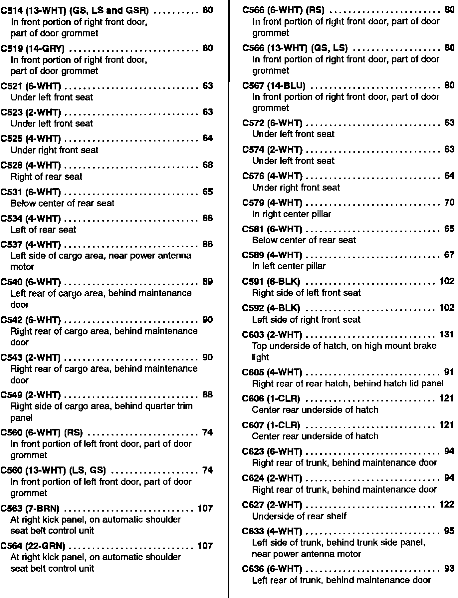

Operation CHARM
: Car repair manuals for everyone.
Home
>>
Acura
>>
1993
>>
Integra L4-1678cc 1.7L DOHC (VTEC) FI
>>
Repair and Diagnosis
>>
Starting and Charging
>>
Charging System
>>
Diagrams
>>
Diagram Information and Instructions
>>
Locations and Photographs
>>
Component Location Index
>>
Power and Ground Distribution
>>
Ground Distribution
>>
C514 Thru C636
C514 Thru C636
Ground Distribution Component Location Index (C514 Thru C636):
